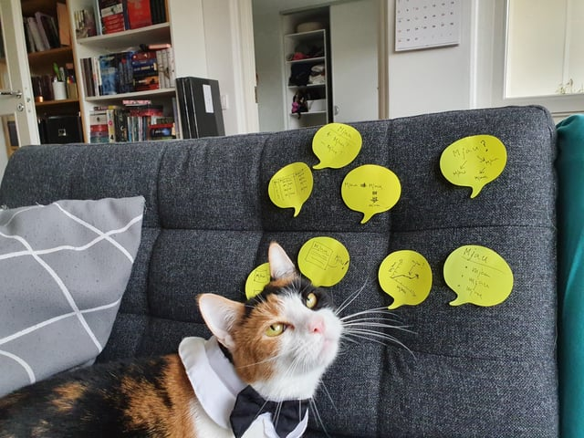

Conclusion: Final Thoughts
words..
What did we learn?
1. Language Building:
- Javascript, HTML, CSS:
- More Python:
- Pandas data frames and parsing data
- Formatting data
- Creating and editing CSV files
- Seaborn and matplotlib
2. Data Visualization Theory:
- Vocabulary
- Visual encodings
- Different templates
The bar chart is the best the pie chart sucks
3. Design/Project Process:
- Brain Storming

- Parsing and formatting datasets
- Creating a visualization in seaborn and then in JavaScript
4.Tools and Reasources:
- Google Collab:
- for quick and dirty python testing
- parsing, formating, and visualizing data
- Rollup for bundling mulitple JS files
- seaborn Gallery for finding ideas and implementations for data vizualizations
- D3 Gallery
- bootstrap format for webpages
- Kaggle for datasets
- Color Brewer for colorblind friendly color paletts
5.Skills:
- How to embed viz hub code into an HTML page
- How to make static viz in D3
- How to make dynamic viz in D3
- Dropdowns
- Mouse events
- Zooms and pans
- Transitions and animations
- Changing fill colors and size of a given element
- Refactoring and reorganizing into modules
How did we apply the things we were taught?
1. We Practiced the Design Process
- Brainstormed while keeping data visualization theory in mind
- Took in feedback and iterated
2. Parsed through and formatted our data for our code:
- Used pandas from python
- Processed data
- Created new CSV files with data formatted for our code
- D3 from JS
3.Looked for datasets to be able to answer questions about domains of interest using Kaggle
4. We Practiced the Design Process
- Made standalone Colab visualizations using seaborn plots
- Used Colab to test out ideas that we would later code up with Javascript in Vizhub
5. Made decisions about color blind friendly color pallets useing Color Brewer
6. Make a dynamic visualization in VizHub using D3
- Included mouse events linking two svgs
- Included an interactive geojson world map and scatter plot
- Increase size of a circle element when mouse is over it or when highlighted
- Highlight country when the corresponding circle was highlighted
- Highlight a circle when the corresponding country is highlighted
- Made a tooltip window that pops up over a country when mouse is over it that changes depending on the country and follows the mouse
- Data joins, which associated data to a given HTML element
- Selections and dynamically modifying HTML elements based on mouse events
- Bundled the Viz Hub code with rollup
- Embed a dynamic visualization in HTML page